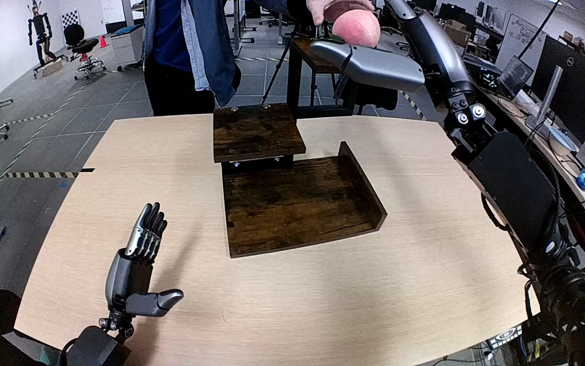

NVIDIA GR1 · 89
Video 89

Visual review action_review.json
{
"prompt_protocol": "humanoid_action_v1",
"prompt_provenance": "visually_authored_from_video_and_initial_frame",
"reviewed_contact_sheets": [
"sheet_001.jpg"
],
"inspected_frame_stride": 2,
"inspected_sampled_frame_count": 60,
"initial_scene": "Robot-centered downward forward view of both hands and a tiered wooden shelf. The left hand is open beside the work area. A person is holding a pink peach-shaped object above the upper rear shelf near the raised right hand; the lower shelf is empty.",
"observed_sequence": [
{
"start_frame": 0,
"end_frame": 14,
"action": "A person lowers the pink peach onto the upper rear wooden shelf and removes their hand. The robot right hand lifts slightly to clear the object; left hand stays open beside the table.",
"confidence": "high"
},
{
"start_frame": 15,
"end_frame": 36,
"action": "The right hand moves around the peach on the upper rear shelf and closes its fingers and thumb around it. The person has withdrawn.",
"confidence": "high"
},
{
"start_frame": 37,
"end_frame": 60,
"action": "The right hand lifts the peach clear of its shelf. It rises briefly toward the upper image edge, partially or fully occluding the held peach. The emptied upper shelf is visible.",
"confidence": "high"
},
{
"start_frame": 61,
"end_frame": 100,
"action": "The right hand carries the grasped peach forward and downward over the bottom wooden shelf, retaining its grasp throughout the visible transport.",
"confidence": "high"
},
{
"start_frame": 101,
"end_frame": 110,
"action": "The right hand lowers the peach onto the bottom shelf and begins opening the fingers, allowing the peach to rest on the wood.",
"confidence": "high"
},
{
"start_frame": 111,
"end_frame": 119,
"action": "The fingers spread and the right hand withdraws downward and rightward, leaving the peach visibly stationary on the bottom shelf. The left hand never participates.",
"confidence": "high"
}
],
"arm_hand_roles": {
"right": "Active manipulator: grasps the peach from the upper rear shelf after the person sets it down, lifts, carries downward, sets it onto the bottom shelf, releases, and withdraws.",
"left": "Open and idle beside the table throughout; no object contact, stabilization, or transfer.",
"person": "Places the peach onto the upper rear shelf at the beginning, then removes their hand before the robot grasps it.",
"coordination": "Single-hand robot manipulation. Human setup precedes robot grasp; no direct hand-to-hand transfer and no coordinated two-hand support."
},
"anatomical_side_evidence": {
"description": "The camera looks forward and down between the paired robot forearms. Each forearm enters from its corresponding lower side; the idle hand on the image left has its thumb on the inward/image-right side, establishing a left hand. The active hand on the image right has the complementary inward-facing thumb and is the robot right hand. Native frames 0, 86, 112 and 119 expose complementary hand geometry and wrist/forearm continuity.",
"confidence": "high",
"limitation": "Torso and shoulder attachments are outside the image; naming uses the paired forearm origins and complementary thumb anatomy in the robot-centered view rather than image position alone."
},
"uncertainties": [
"The torso and shoulder attachments are outside the view; right/left identification is grounded in paired forearm origins and complementary thumb anatomy. Some fingers and the peach are briefly occluded at the upper image edge during lift, but the secure carry and final release are visible."
],
"annotation_discrepancies": [
"The source instruction omits the initial person setting the peach onto the upper rear shelf. The stated right-hand upper-to-bottom shelf transfer agrees with the observed robot action."
],
"evidence_frame_indices": [
0,
14,
20,
36,
48,
54,
62,
86,
104,
112,
119
],
"selected_execution_status": "success",
"inspection_coverage": {
"source_frame_range": [
0,
119
],
"sampled_frames": "Every second decoded frame, 0 through 118; all 60 visually reviewed in sheet_001.jpg.",
"native_frames": [
0,
14,
20,
36,
48,
54,
62,
86,
104,
112,
119
],
"initial_png_viewed_at_native_resolution": true
},
"terminal_state": "The pink peach rests independently on the bottom wooden shelf. The right hand is open and withdrawn clear of it toward the lower right, and the left hand remains open beside the table.",
"video_id": "89",
"dataset": "NVIDIA_GR1_100",
"dedicated_review_agent": "review_gr1_89",
"review_source_video": "NVIDIA_GR1_100/89/original/original.mp4",
"source_frame_count": 120,
"source_fps": 20.0,
"native_detail_frames": [
0,
14,
20,
36,
48,
54,
62,
86,
104,
112,
119
],
"world_model_prompt": "After a person sets the pink peach on the upper rear shelf and lets go, the robot grasps it with its right hand and lifts it clear. It carries the peach forward and down to the bottom shelf, opens its fingers to leave it resting there, and withdraws its right hand. Keep the camera fixed; preserve robot geometry, physically valid joint motion, and normal gripper opening and closing.",
"original_task_instruction": "Use the right hand to pick up pink peach from top level of the shelf to bottom level of the shelf.",
"selected_segment": {
"start_frame": 0,
"end_frame_exclusive": 120,
"reason": "Complete original single-task reference; no cropping or trimming requested."
},
"source_video_sha256": "4d1ee5b4a515a84c96695ceaaf66bab76b8362de76d8a4518b2872f16ead4cad",
"review_completed_at": "2026-10-13T18:38:08.756038+00:00"
}